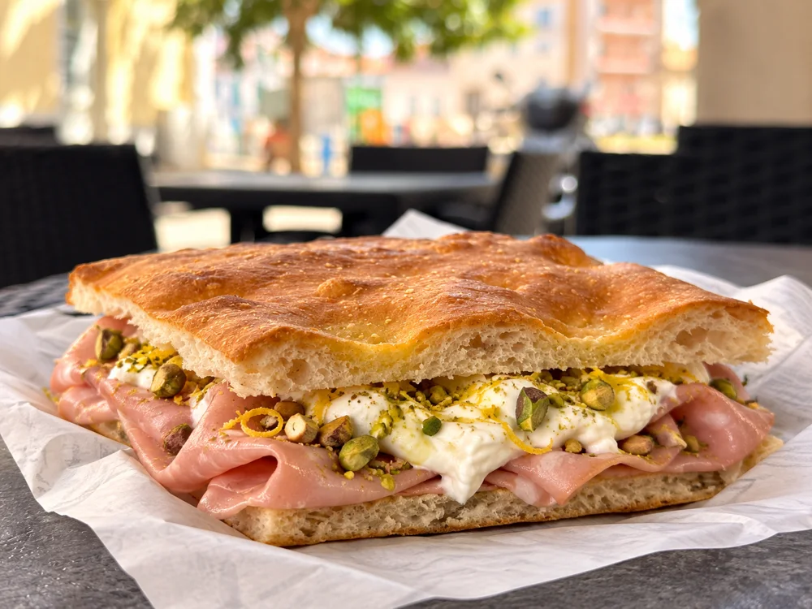
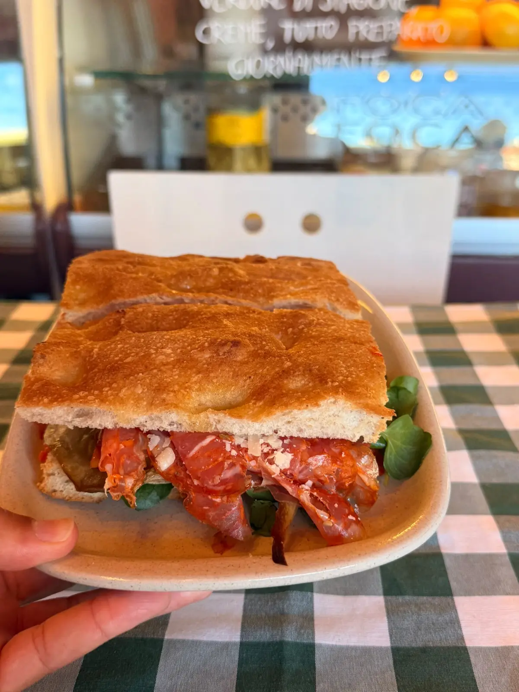
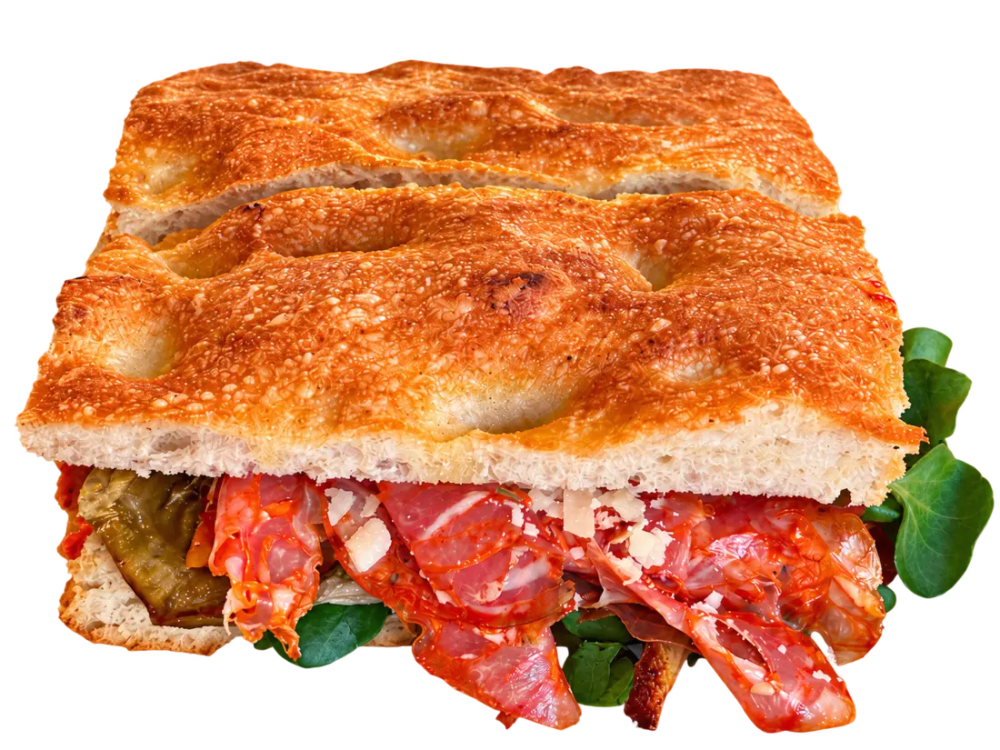

Clássicas
Mortadella
11,00 €Mortadella com pistáchio, burrata, raspas de limão.
01 · A história

Gabriele traz a tradição italiana e quinze anos de experiência em padaria e pizzaria. Janainy junta-lhe a sensibilidade para receber e criar um lugar onde apetece ficar.
Farinhas italianas 100% naturais, massa preparada diariamente e mais de 24 horas de fermentação. Enchidos e queijos escolhidos pela sua qualidade. Mais sabor, mais aroma, mais leveza.
Uma pequena parte de Itália, agora no coração de Setúbal.

O sabor ganha forma
Filme de conceito · composição ilustrativa
03 · À tua espera
Um almoço a dois, uma pausa com amigos ou uma ocasião especial. Prepara o teu pedido e envia-o à equipa.
Este formulário prepara uma mensagem. A reserva só fica confirmada após resposta do restaurante. Para hoje, recomendamos ligar.
Ligar para reservarHora local de Setúbal. A disponibilidade e os horários são confirmados pela equipa.
04 · Visita-nos
Fala connosco
+351 913 602 617@focafoca.focacceria Enviar SMS Consulta o Instagram para horários e novidades.